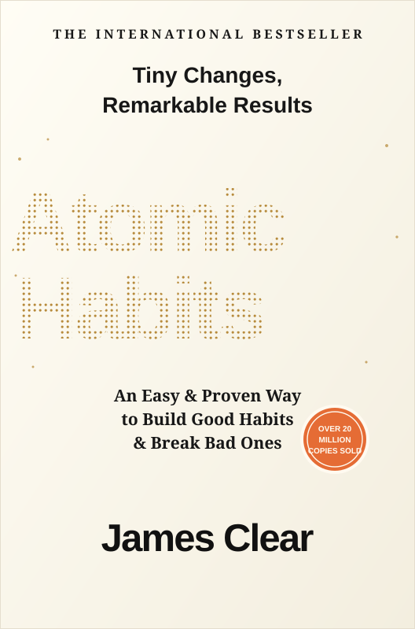

Bikin kelihatan
Bikin kebiasaanmu gampang kelihatan. Mau rajin baca? Taruh buku di dekat kasur. Mau olahraga? Siapkan sepatu dari malam. Jadi, kamu nggak perlu repot mencari alasan untuk mulai.
BUKAN CUMA SOAL MAU JADI APA. TAPI JUGA SOAL APA YANG KAMU LAKUKAN SETIAP HARI.
Nggak perlu langsung berubah 180 derajat. Mulai dari kebiasaan kecil yang bisa kamu ulangi, sampai pelan-pelan jadi bagian dari hidupmu.
Mulai membaca ↓
01 MULAI DARI SINI
James Clear ngajak kita melihat satu hal sederhana: perubahan besar sering dimulai dari hal kecil yang dilakukan berulang. Bukan soal langsung jago atau langsung disiplin, tapi soal punya cara yang bikin kita lebih gampang mulai lagi besok.
Atomic Habits punya ide yang gampang banget dipahami: kamu nggak harus langsung melakukan perubahan besar. Kebiasaan kecil—kalau dilakukan terus—bisa membawa perubahan yang berarti. Misalnya baca dua halaman, jalan kaki sebentar, atau belajar satu hal baru setiap hari.
Sering kali kita sibuk bikin target: pengin jago bahasa Inggris, punya badan lebih sehat, atau lancar desain. Tapi setelah itu bingung harus mulai dari mana. Nah, buku ini mengajak kita fokus ke rutinitas kecil yang bisa dilakukan untuk mendekati target tadi.
Ada juga bahasan tentang identitas. Intinya, kebiasaan yang kita lakukan ikut membentuk cara kita melihat diri sendiri. Setiap kali kamu membuka buku, kamu sedang melatih diri menjadi orang yang suka belajar. Setiap kali latihan desain, kamu sedang membangun kebiasaan sebagai seorang kreator. Kecil, tapi ada artinya.
Jadi, jangan merasa harus langsung berubah total. Mulai saja dari versi paling kecil yang masuk akal buatmu. Kalau hari ini cuma sanggup baca satu halaman, ya nggak apa-apa. Yang penting kamu punya jalan untuk mulai lagi.
02 PRINSIP INTI
Ini empat prinsip utama yang dibahas dalam buku. Anggap sebagai panduan untuk mencoba, bukan rumus ajaib yang langsung bikin hidup berubah.
Bikin kebiasaanmu gampang kelihatan. Mau rajin baca? Taruh buku di dekat kasur. Mau olahraga? Siapkan sepatu dari malam. Jadi, kamu nggak perlu repot mencari alasan untuk mulai.
Gabungkan hal yang perlu kamu lakukan dengan hal yang kamu suka. Misalnya, dengarkan playlist favorit saat beres-beres kamar atau belajar bareng teman biar nggak terasa sendirian.
Jangan bikin langkah awal terlalu berat. Kalau mau belajar, mulai 5–10 menit dulu. Nggak perlu langsung duduk tiga jam. Bikin gampang dulu, nanti durasinya bisa ditambah.
Kasih tanda kalau kamu sudah melakukannya. Bisa centang kalender, bikin checklist, atau catat progres. Rasanya memang sederhana, tapi melihat kemajuan sendiri bisa bikin semangat.
Jangan cuma bilang “aku mau jadi jago”. Kasih bukti kecil lewat tindakan. Latihan sedikit hari ini, latihan lagi besok. Kalau bolong sehari, bukan berarti gagal total. Mulai lagi saja.
Motivasi kadang datang, kadang kabur entah ke mana. Jadi, bantu dirimu sendiri: siapkan alat, rapikan tempat, dan jauhkan gangguan supaya kebiasaan baik lebih gampang dilakukan.
03 CONTOH DALAM HIDUP
Pilih contoh yang paling dekat dengan hidupmu. Nggak harus ditiru persis—sesuaikan saja dengan jadwal dan kemampuanmu.
Setelah sikat gigi pagi, pakai baju olahraga yang sudah disiapkan. Mulai jalan kaki 5–10 menit. Nggak perlu langsung jauh.
Contoh penerapan: Contoh: “Setelah sarapan, aku berjalan 10 menit sebelum membuka media sosial.”
Taruh buku di dekat tempat kamu biasa duduk. Baca dua halaman saja, lalu centang kalender kalau sudah selesai.
Contoh penerapan: Contoh: “Setelah menaruh ponsel untuk diisi daya, aku membaca dua halaman.”
Jangan tulis target “belajar banyak”. Ganti dengan tugas jelas, misalnya membaca satu subbab. Tutup tab yang nggak perlu dan mulai 10 menit.
Contoh penerapan: Contoh: “Pukul 19.00 aku membuka dokumen dan menulis tiga poin pertama.”
Saat uang masuk, langsung sisihkan tabungan sesuai kemampuan. Pisahkan dari uang yang dipakai sehari-hari supaya nggak tercampur.
Contoh penerapan: Contoh: mulai dengan nominal yang realistis, lalu evaluasi setelah satu bulan.
Matikan notifikasi yang nggak penting, pindahkan aplikasi pemicu scrolling, dan tentukan kapan waktunya cek media sosial.
Contoh penerapan: Contoh: “Saat bekerja, ponsel berada di luar jangkauan selama satu sesi fokus.”
Setelah toko tutup atau pekerjaan selesai, luangkan lima menit untuk mencatat hasil hari ini dan satu hal yang mau diperbaiki besok.
Contoh penerapan: Contoh: evaluasi lima menit lebih baik daripada menunggu waktu luang panjang yang tidak kunjung datang.
04 IDE YANG DEKAT DENGAN KEHIDUPAN
Kebiasaan kecil bisa dibawa ke banyak hal: kuliah, kerja, olahraga, keuangan, sampai usaha. Ini bukan daftar yang wajib kamu ikuti semua. Pilih satu yang paling kamu butuhkan sekarang, lalu coba dengan versi paling ringan.
Satu kebiasaan yang benar-benar kamu jalani jauh lebih masuk akal daripada 10 target yang cuma jadi wacana.
Materi sering terasa numpuk kalau baru dibuka saat mau ujian. Akhirnya belajar jadi maraton semalam suntuk.
Coba langkah kecil ini: Setelah sarapan, pelajari satu subbab selama 10 menit. Tutup dengan menulis tiga poin yang kamu pahami.
Yang perlu diingat: Nggak harus langsung berjam-jam. Bikin sesi belajar gampang dimulai.
Pengen jago desain, coding, editing, public speaking, atau bahasa asing, tapi cuma menyimpan tutorial.
Coba langkah kecil ini: Latih satu skill selama 15 menit. Buat hasil kecil: satu desain, potongan kode, atau rekaman suara.
Yang perlu diingat: Belajar bukan cuma nonton. Kasih dirimu kesempatan untuk mencoba.
Buku sudah dibeli, tapi masih rapi di meja karena menunggu waktu luang panjang.
Coba langkah kecil ini: Taruh buku di tempat yang terlihat. Baca dua halaman setelah makan atau sebelum tidur.
Yang perlu diingat: Dua halaman tetap kemajuan. Nggak perlu menunggu waktu sempurna.
Mau lebih aktif, tapi membayangkan olahraga berat malah bikin malas duluan.
Coba langkah kecil ini: Siapkan sepatu dari malam. Mulai dengan jalan kaki 10 menit atau peregangan ringan.
Yang perlu diingat: Mulai dari versi termudah. Tambah pelan-pelan sesuai kemampuan.
Awalnya cuma cek pesan, lalu pindah ke video pendek dan media sosial tanpa sadar.
Coba langkah kecil ini: Pindahkan aplikasi pengalih perhatian dari layar utama. Saat fokus, taruh HP di luar jangkauan.
Yang perlu diingat: Bikin kebiasaan buruk lebih repot dilakukan, bukan cuma mengandalkan niat.
Bangun kesiangan sering bikin semua kegiatan terasa dikejar-kejar.
Coba langkah kecil ini: Sebelum tidur, siapkan pakaian, tas, botol minum, dan tiga prioritas besok.
Yang perlu diingat: Rutinitas pagi yang enak sering dimulai dari persiapan malam sebelumnya.
Kalau menabung hanya mengandalkan uang sisa, sering kali nggak ada yang tersisa.
Coba langkah kecil ini: Saat menerima uang, pindahkan nominal kecil yang realistis ke tempat terpisah.
Yang perlu diingat: Jumlah kecil yang rutin bisa jadi awal kebiasaan finansial sehat.
Menghafal puluhan kata sekaligus terasa berat dan gampang terlupakan.
Coba langkah kecil ini: Pilih tiga kata baru sehari. Buat kalimat sendiri dan coba ucapkan saat aktivitas harian.
Yang perlu diingat: Sedikit, dipakai, dan diulang. Jangan cuma dikumpulkan di catatan.
Daftar pekerjaan panjang bikin bingung mau mulai dari mana. Akhirnya malah menunda semuanya.
Coba langkah kecil ini: Tulis tiga prioritas sebelum mulai. Kerjakan langkah pertama dari tugas terpenting selama 15 menit.
Yang perlu diingat: Pecah pekerjaan besar jadi langkah yang kelihatan dan bisa dikerjakan.
Ide konten datang random. Saat mau produksi, malah bingung cari topik dan mulai dari nol.
Coba langkah kecil ini: Catat ide di satu tempat. Sisihkan sesi untuk menulis beberapa ide dan gunakan template produksi.
Yang perlu diingat: Siapkan sistem yang memudahkanmu, jangan mengandalkan mood terus.
Punya ide jualan, tapi keburu pusing mikirin logo, kemasan, website, dan hal besar lainnya.
Coba langkah kecil ini: Pilih satu produk atau jasa. Ajak ngobrol lima calon pelanggan dan catat kebutuhan mereka.
Yang perlu diingat: Validasi ide lewat langkah kecil. Nggak perlu semuanya sempurna sebelum mulai.
Takut menawarkan produk karena khawatir ditolak atau terdengar terlalu agresif.
Coba langkah kecil ini: Jelaskan satu manfaat produk secara jujur kepada calon pembeli. Catat pertanyaan yang sering muncul.
Yang perlu diingat: Kemampuan jualan tumbuh dari latihan mendengar dan menjelaskan.
Sudah menonton materi SEO, iklan, atau media sosial, tetapi belum pernah mengevaluasi hasil sendiri.
Coba langkah kecil ini: Pilih satu kanal. Buat konten atau optimasi satu halaman, lalu cek jangkauan, klik, atau respons.
Yang perlu diingat: Praktik kecil dan evaluasi rutin lebih berguna daripada teori yang cuma disimpan.
Ingin melamar magang atau kerja, tetapi bingung menunjukkan kemampuan.
Coba langkah kecil ini: Setiap minggu, buat satu hasil yang bisa ditampilkan: desain, tulisan, analisis, atau proyek kecil.
Yang perlu diingat: Kumpulkan bukti kemampuan sedikit demi sedikit.
Pengen punya koneksi di bidang yang diminati, tapi bingung membuka obrolan.
Coba langkah kecil ini: Setiap minggu, sapa satu orang dari komunitas atau bidang yang kamu minati. Tanyakan pengalamannya.
Yang perlu diingat: Relasi dibangun lewat interaksi kecil yang konsisten.
Pesanan, stok, pemasukan, dan komplain pelanggan mudah berantakan kalau semuanya dicatat di kepala.
Coba langkah kecil ini: Tentukan waktu untuk memperbarui catatan penjualan dan stok. Gunakan checklist untuk pekerjaan berulang.
Yang perlu diingat: Sistem sederhana membantu usaha tetap rapi sedikit demi sedikit.
Catatan BRINGAS: semua contoh di atas adalah ilustrasi penerapan ide dari Atomic Habits, bukan kisah nyata atau studi penelitian. Sesuaikan dengan kondisi, waktu, dan kemampuanmu.
05 IDE UNTUK DIINGAT
Ini kalimat pengingat versi BRINGAS, bukan kutipan langsung dari James Clear.
“Perubahan kecil menjadi kuat ketika desain hari ini membuat pengulangan esok lebih mudah.
Catatan BRINGAS · konsistensi
“Jangan hanya bertanya hasil apa yang kamu inginkan. Tanyakan sistem apa yang menghasilkan hasil itu.
Catatan BRINGUS · sistem
“Identitas tumbuh lewat bukti kecil yang kamu ulangi, bukan lewat janji besar yang kamu ucapkan sekali.
Catatan BRINGAS · identitas
06 WORKBOOK MINI
Pilih satu kebiasaan yang ingin kamu bangun. Ikuti langkah kecil ini dan centang kalau sudah dicoba. Nggak harus sempurna, yang penting mulai.
07 SIAPA YANG COCOK?
Untuk mengubah niat menjadi rutinitas kecil yang lebih mudah diulang.
Untuk merancang sistem kerja, eksperimen, dan kebiasaan operasional.
Untuk membangun ritme komunikasi, dokumentasi, dan evaluasi yang lebih jelas.
Untuk mengurangi hambatan, menjaga fokus, dan membangun proses kreatif.
Ingat, tiap orang punya kondisi dan kesibukan yang beda. Kalau satu cara nggak cocok, bukan berarti kamu gagal. Coba ubah caranya, kecilkan targetnya, atau cari dukungan. Kebiasaan baik seharusnya membantu hidupmu, bukan bikin kamu merasa bersalah terus.
08 LANJUTKAN BELAJAR
Anggap ringkasan ini sebagai pemanasan. Kalau kamu ingin memahami ide James Clear lebih lengkap, lanjutkan dengan membaca buku aslinya.
Visualisasi desain sampul edisi Inggris, bukan foto produk toko.